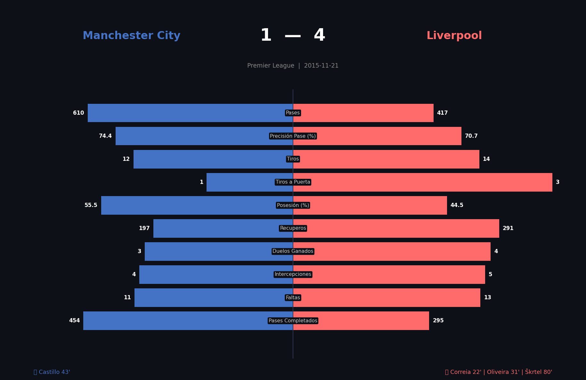
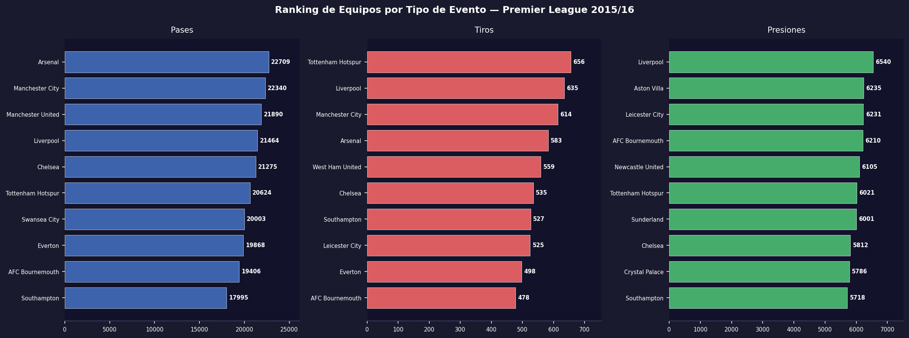
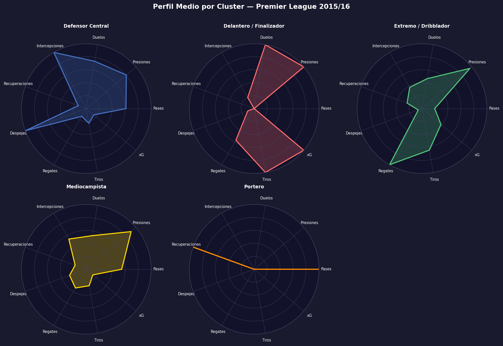
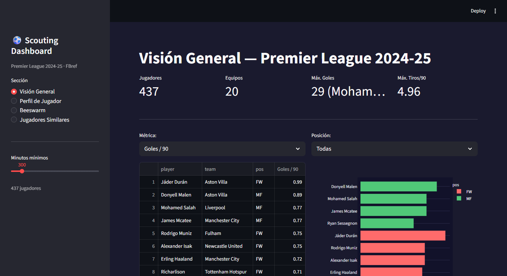
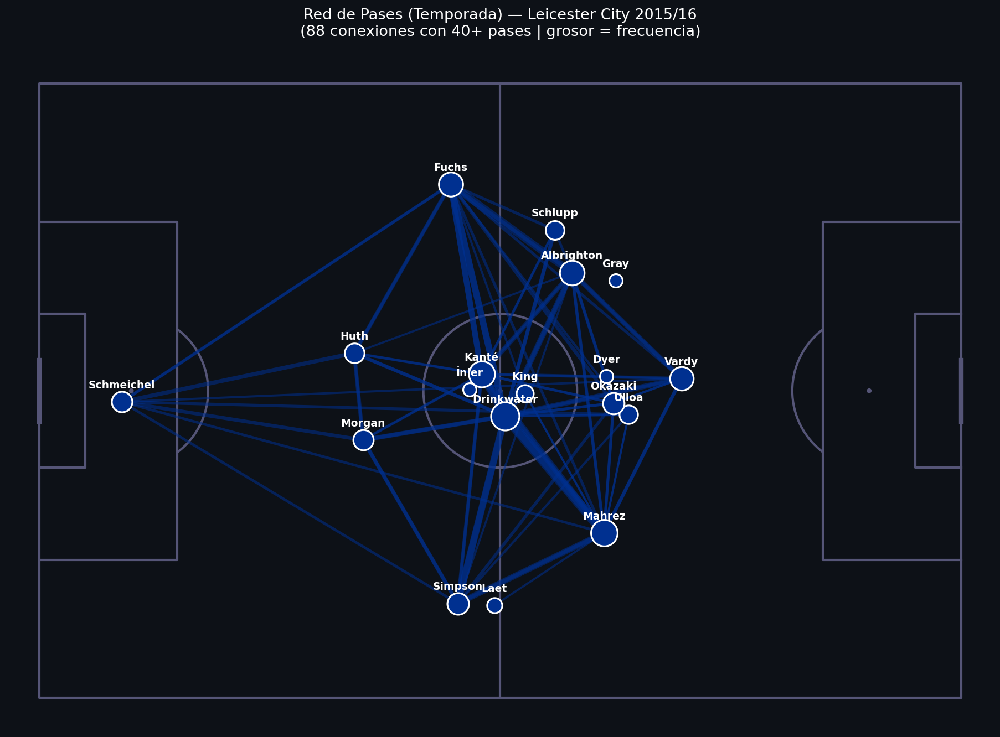
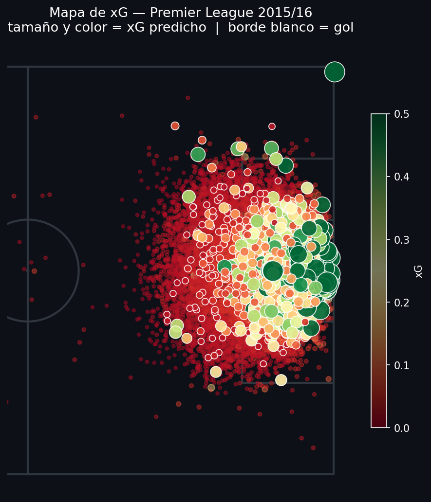

Project 01
Manchester City 1–4 Liverpool
Deep single-match analysis of a landmark Premier League game.
View Notebook →
- Liverpool won with less possession but 3× more dangerous shots
- xG: Liverpool 3.25 vs City 0.90
- 291 ball recoveries vs 197 — systematic pressing wins

Project 02
Season Analysis with SQL
Full-season database with 1.3 million events from all 380 matches.
View Project →
- Harry Kane top scorer with 25 goals
- Liverpool led pressing with 6,540 pressure actions
- Leicester won with modest xG — pure efficiency

Project 03
Player Profiling with ML
Unsupervised clustering of 502 players into 5 tactical profiles.
View Project →
- KMeans identifies: Goal Threats, Playmakers, Pressers, Wide Players, Defenders
- Radar charts show each player's strengths at a glance
- Individual similarity comparator included

Project 04
Interactive Scouting Dashboard
Live web app for analyzing and comparing PL 2024-25 players.
View Project →
- 437 players with position-adjusted percentile rankings
- Beeswarm plots and radar charts for visual comparison
- Cosine similarity to find players with matching profiles

Project 05
Tactical Analysis — Leicester City
How did Leicester win the league at 5000-1? Event data tells the story.
View Project →
- High PPDA = mid/low block, not a pressing team
- Kanté dominated defensive actions single-handedly
- Direct passing: defense straight to Vardy, bypassing midfield

Project 06
Custom Expected Goals (xG) Model
Predictive model trained on 9,900+ shots to estimate goal probability.
View Project →
- Only 1 in 10 shots is a goal — geometry predicts which one
- Model correct 8 out of 10 times (AUC ~0.80)
- Leicester and Vardy: scored more than the model expected
Ciencia del Rendimiento Físico con R
Tres proyectos de análisis físico en fútbol — GPS, tracking y wellness — desarrollados en el diplomado FC Barcelona Hub.
R
FC Barcelona Hub
GPS Tracking
Shiny
Metrica Sports

Análisis de Sesiones GPS
Monitoreo de carga física por posición en sesiones de entrenamiento.
Ver Notebook →
- Extremos y laterales lideran en distancia HSR
- MD-3 muestra mayor intensidad que MD-4 al acercarse el partido
- Z-scores detectan jugadores con sobrecarga o bajo rendimiento

Fatiga Física — Tracking Metrica
Velocidad y zonas de esfuerzo calculadas desde datos de tracking a 25 Hz.
Ver Notebook →
- Coordenadas crudas convertidas a metros reales (105 × 68 m)
- 5 zonas de esfuerzo: Caminando / Trote / Carrera / HSR / Sprint
- Caída en HSR en 2do tiempo — fatiga cuantificada por jugador

Dashboard de Wellness
App interactiva Shiny para monitoreo diario del bienestar del plantel.
Ver Código →
- Tarjetas KPI con sistema de semáforo (Verde / Ámbar / Rojo)
- Tendencia de Sueño y Fatiga por jugador y rango de fechas
- Mapa de calor comparativo entre todos los jugadores del plantel